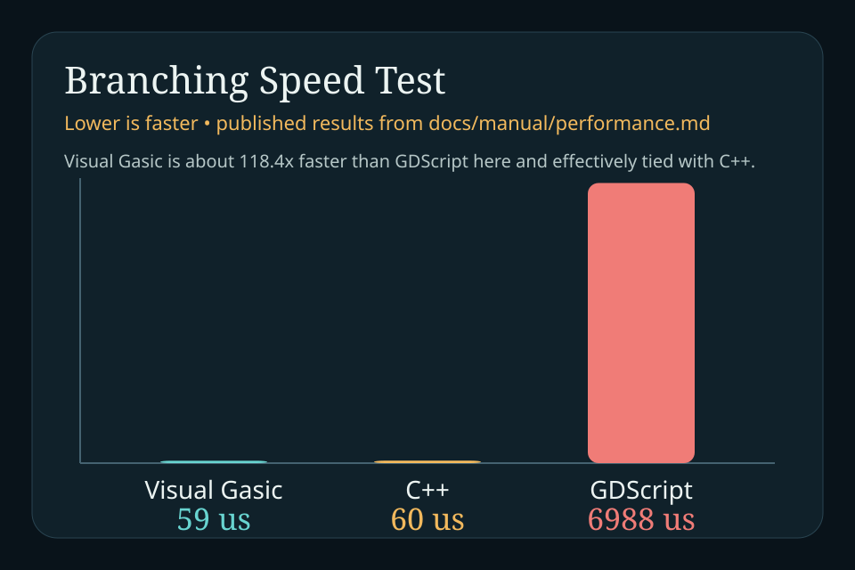
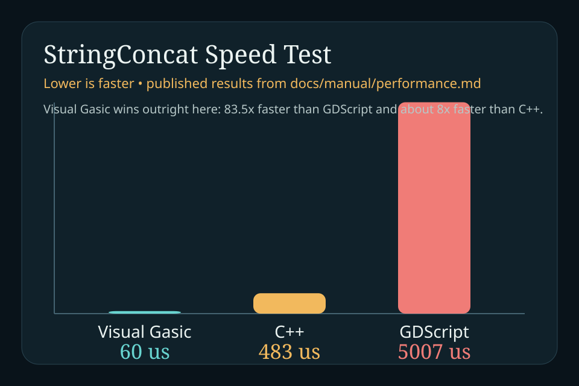
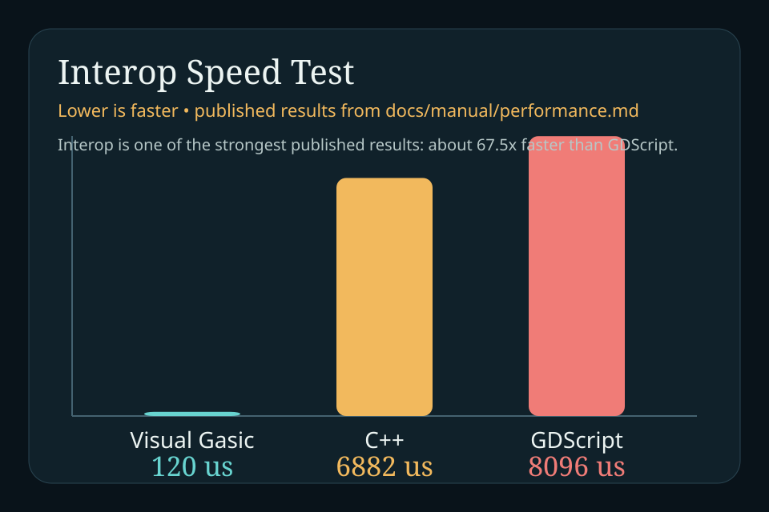
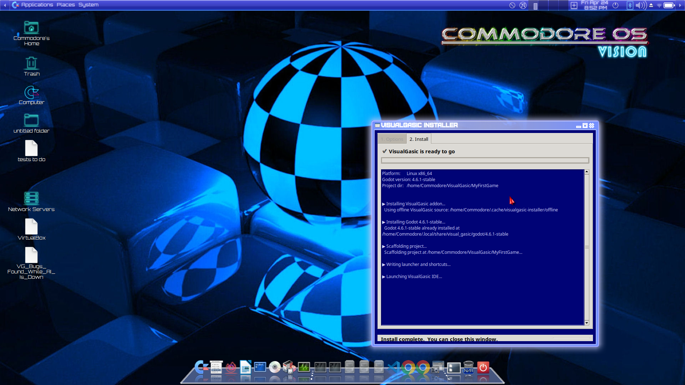
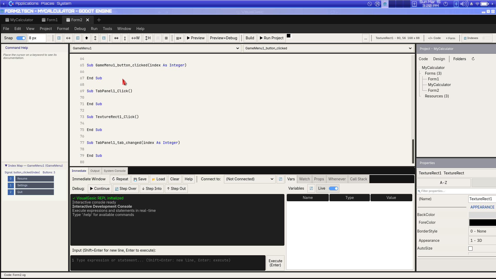
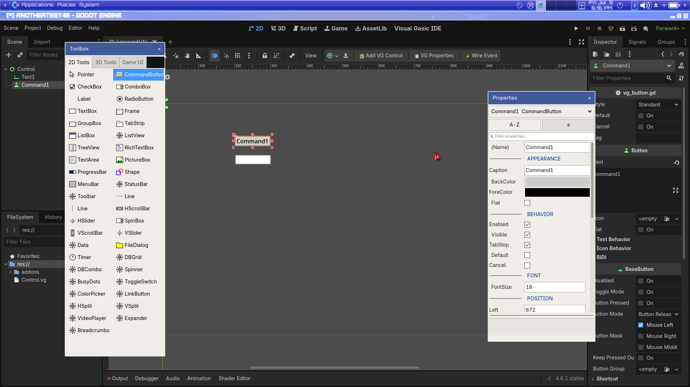
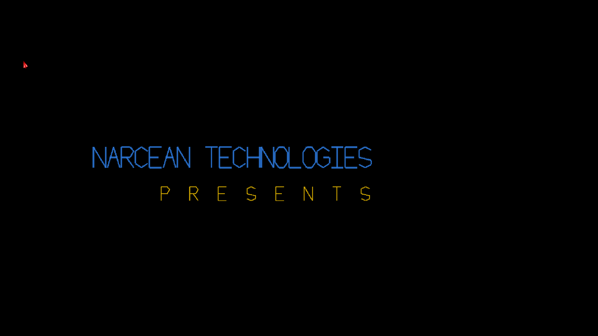
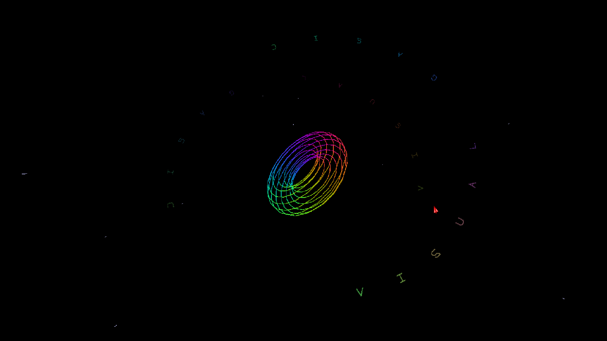
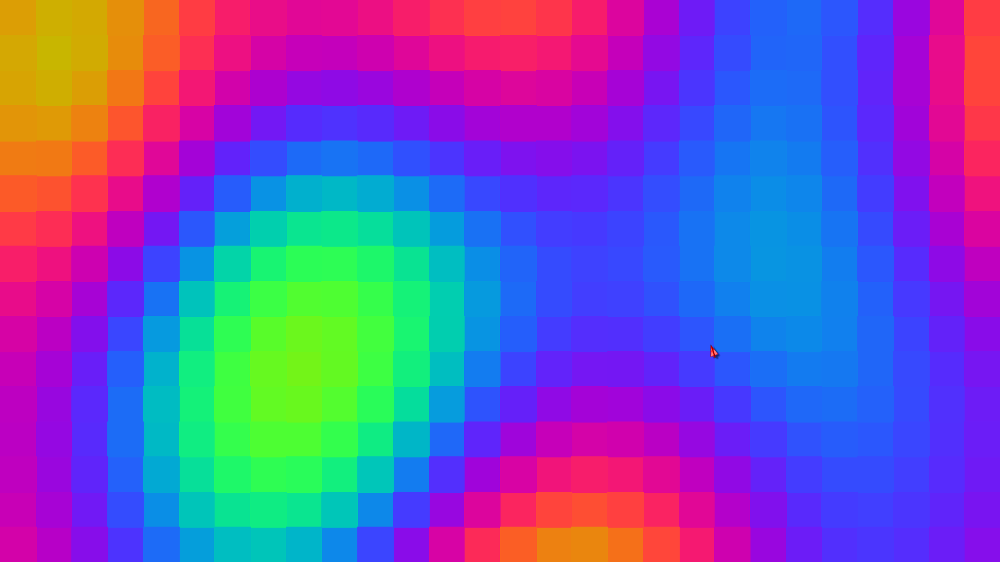
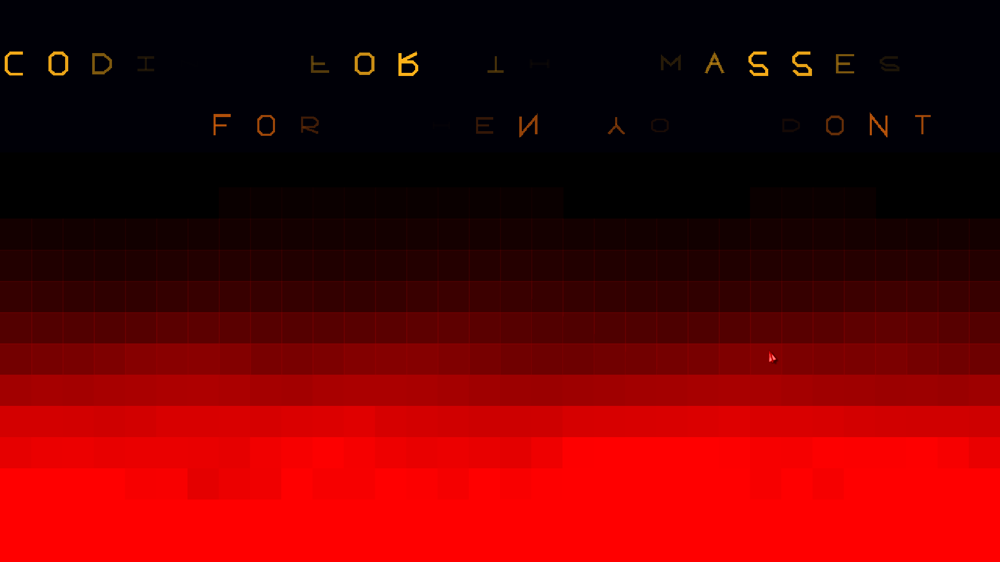

VG Beta Showcase
~6-minute release tour — Backrooms hub, shaders, Neon Runner, Vector Storm. Clone the repo, open projects/vg_beta_showcase/project.godot, press F5.
Narcean Technologies | Visual Gasic
For when you don't trust AI.
Visual Gasic takes the directness of classic VB6-era programming and repositions it for the AI era: explicit, readable, auditable code on top of a serious Godot-powered toolchain. The design goal: write your Godot game logic in plain English with AI, get back code that reads like a document, not a puzzle — AI writes it, you understand it. Get from curiosity to install, docs, demos, benchmarks, and release media below.
v5.4.0-beta1 shipped: 12/12 compute + 9/9 draw, Beta Showcase tour, 891/891 tests. Next: Narcea M5 (beta2, Oct 2026).
Status
projects/vg_beta_showcase/ (install, open, press F5)Downloads
These links point at the current v5.4.0-beta1 release assets on GitHub. Use the one-click installer for a fresh setup. If you already have Godot 4.6.1+, install from the Asset Library or download the addon zip. For air-gapped installs, use the offline bundle.
Portable platform zips are no longer provided — they exceeded GitHub’s 2 GB limit. Bring your own Godot and install VisualGasic via AssetLib or a release zip.
Visual Gasic is an active public beta. Core language features, the JIT compiler, and the debugger are working and proven across 50+ validated examples. UI Forms is modernizing the form designer experience. Install today and write real Godot projects with code you can read and trust.
~6-minute release tour — Backrooms hub, shaders, Neon Runner, Vector Storm. Clone the repo, open projects/vg_beta_showcase/project.godot, press F5.
AppImage installer for Linux x86_64.
Download AppImageOne-click Windows x64 installer.
Download EXEInstall Godot 4.6.1+, then add the addon from AssetLib or a release zip.
Asset Library Zip Minimal Addon Zip AssetLib ListingIncludes the Godot download for offline installs.
Linux Offline Bundle Windows Offline BundleSingle-addon zip for in-editor AssetLib install.
Download Asset Library Zip Store ListingGet Started in 15 Minutes
New to Visual Gasic? Pick your path and jump in. All three come with working code examples and step-by-step instructions.
Manuals
What We Are Building Now
VG is a public beta. **5.4.0-beta1** proved the speed thesis (12/12 + 9/9 vs GDScript) and shipped the Beta Showcase tour. What comes next is Narcea M5 (end-to-end form generation), UI Forms parity, and the examples corpus cleanup — so newcomers can install, watch the showcase, and write code they can read.
projects/vg_beta_showcase/ — Backrooms hub, shader reel, About VG, Squash tease,
Neon Runner, Vector Storm. Open in Godot, press F5. Movie Maker script for frame-perfect capture.
Support The Project
Visual Gasic is an independent open-source project. The bottleneck is not ideas; it is sustained time for compiler work, Godot integration, docs, examples, testing, and the AI tooling costs required to move the project forward quickly.
If you want Visual Gasic to reach a polished v6.0 faster, funding is the most direct lever. Support goes toward shipping Narcea AI pair, stabilizing the language, expanding examples, and reducing release drag.
Best option for recurring support tied directly to the repo.
Sponsor on GitHubMonthly support for steady development time.
Support on PatreonAdditional one-off and direct support options can be added once they are live.
Use GitHub Sponsors For NowWhy BASIC-Like Syntax
If you remember VB6, you'll feel at home in VG. But we're not about running old code—we're about writing new Godot game logic that reads like you wrote it yourself, with AI helping you.
In Visual Gasic, blocks end with explicit markers like End If and End Sub. That is old-school on purpose. It gives the language the same immediate legibility that made classic BASIC approachable, while also giving modern LLMs fewer ways to silently mis-nest logic behind braces, templates, callbacks, and symbolic clutter.
C++ is powerful, but power is not the same thing as inspectability. The practical question in the AI era is what a human can verify fast after the model emits its first draft. BASIC-style code narrows the audit surface: fewer symbolic traps, fewer ownership hazards, less build-system noise, and less chance that one tiny character hides a real bug.
Benchmarked with Claude Sonnet 4.6 on 25 tasks: Visual Gasic compiled on every first attempt — 25/25 (100%). C# failed 5 times (80%). GDScript failed once (96%). The explicit block markers that make VG readable are the same reason AI gets it right first try.
Sub ApplyBonuses()
Dim dmg As Single = 0
For Each item In inventory
If item.is_equipped Then
dmg = dmg + item.damage_bonus
End If
Next
player.damage = base_damage + dmg
End Sub
func apply_bonuses():
var dmg = 0.0
for item in inventory:
if item.is_equipped:
dmg += item.damage_bonus
player.damage = base_damage + dmg
void ApplyBonuses() {
float dmg = 0f;
foreach (var item in inventory) {
if (item.isEquipped) {
dmg += item.damageBonus;
}
}
player.damage = baseDamage + dmg;
}
Visual Gasic is not pretending that everything should be rewritten in BASIC. The compiler, runtime, and engine integration stay in C++ where that makes sense. The code humans and AI need to read, fix, and extend lives in a language designed for that job.
In the published AI correctness benchmark, Claude Sonnet 4.6 hit 25/25 (100%) on Visual Gasic, 24/25 on GDScript, and 20/25 (80%) on C#. An earlier run with Claude Sonnet 4.5 matched the same VG result, while local qwen2.5-coder:7b also hit 25/25 on Visual Gasic while dropping to 17/25 on GDScript. The pattern is consistent across models: AI writes first-draft VG that parses, every time. That is the whole thesis in numbers.
C# failures: model mixed class/top-level syntax (CS8803) and assumed WinForms availability — both Godot-context errors.
View AI Correctness ReportFor GDScript Developers
GDScript developers ask for exception handling, method overloading, abstract classes, namespaces, and generics on GitHub and Reddit every year. Godot's core team consistently rejects or delays these requests — not because they're bad ideas, but because GDScript is designed to stay lightweight engine glue, not a general-purpose language. Visual Gasic is a separate GDExtension with its own compiler and runtime, so it isn't bound by that constraint. Below is what we ship that Godot's team has publicly turned down.
Spawn(), Spawn(pos), Spawn(pos, type, count) all coexist.
has_method() duck-typing workarounds. VG adds MustOverride and MustInherit for real compile-time API enforcement.
Namespace ... End Namespace blocks with qualified imports.
Array(Of Enemy), Dictionary(Of K, V) with real compile-time type checking.
Set(Of T) and Tuple(Of T1, T2, ...) with unpacking.
We're selective, not comprehensive. Some Godot-requested features — multiple inheritance, macros, manual
garbage-collection control, AOT-to-native compilation — we reviewed and deliberately skipped, for the
same readability and predictability reasons VG exists in the first place. C-style ternaries (x ? y : z)
are one we skipped on purpose too — but not without a replacement: VG's IIf(cond, true, false) is
short-circuit, evaluating only the matching branch, so it's actually safer than a C-style ternary or
classic VB6's IIf (which evaluates both sides and can crash on a bad branch even when the condition
skips it).
Speed Tests
Visual Gasic is built to be inspectable, but it is not a toy interpreter. The published suites show it beating GDScript on
12 compute microbenchmarks and 9 canvas draw workloads (Aug 2026). C++ still wins some
tight numeric loops; VG wins high-level ops, fused _Draw grids, and mixed draw batches.



Videos And Demo Source
~6-minute release tour: Backrooms hub, shader reel, About VG, Squash tease, Neon Runner, Vector Storm. Open projects/vg_beta_showcase/ and press F5.
A 5-minute procedural demoscene written in one Visual Gasic file. Pure retro attitude, but also a serious proof that the language can drive non-trivial graphics work.
Watch on YouTubeThe build process, design reasoning, and development walkthrough.
Watch the making-ofThe full demo project and the single demo.vg file, for anyone who wants to verify exactly how the effect stack was built.
Open project source Open demo.vgPong, Calculator, ParallelDemo, shader demos, audio demos, and more. The repo is full of examples meant to be read, not just shipped.
Browse demos folder Read demos indexScreenshots







Visual Gasic is an independent open-source project. v5.4.0-beta1 is the current public beta — sponsorship helps fund Narcea M5, docs, examples, and the road to stable VG6 in 2027.
♥ Sponsor on GitHub